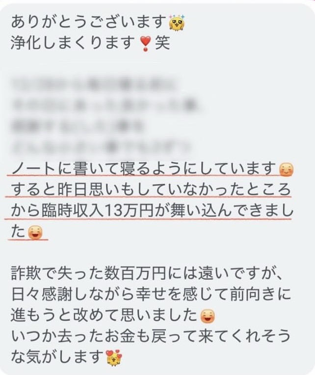
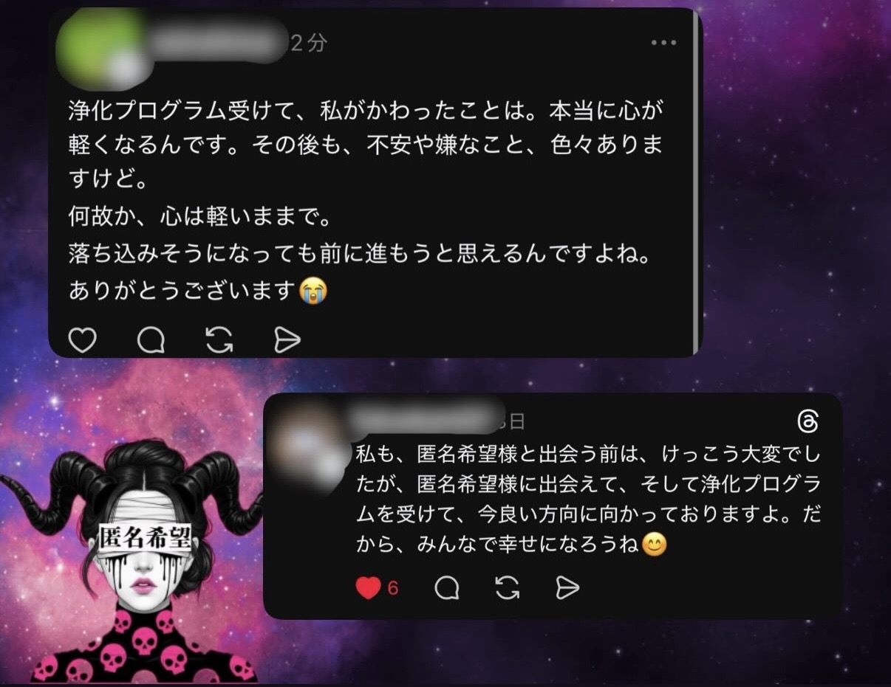
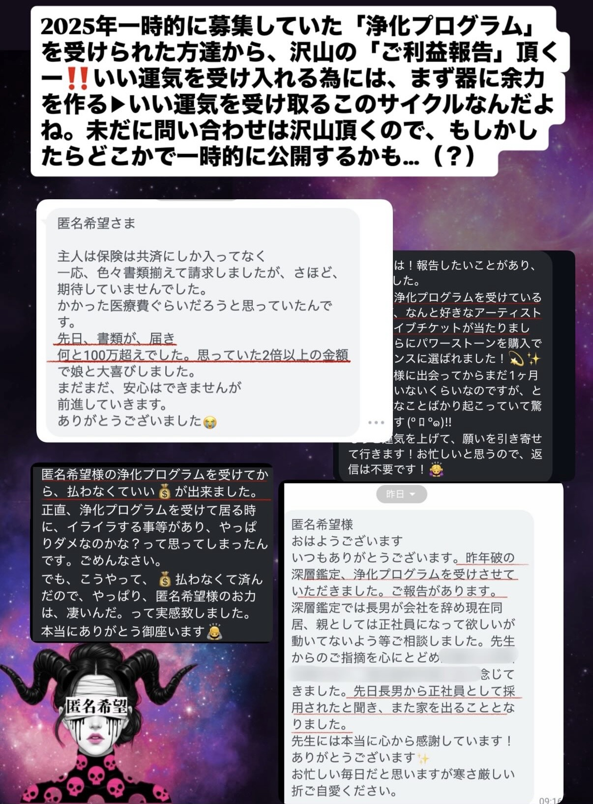
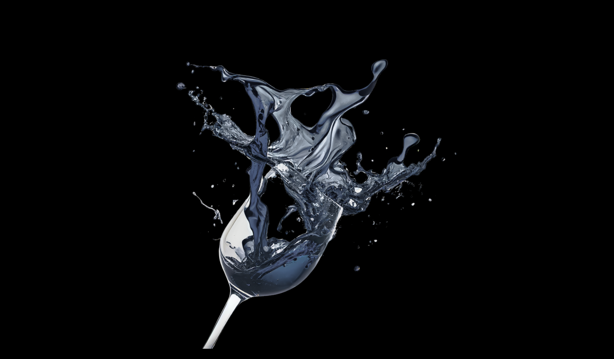
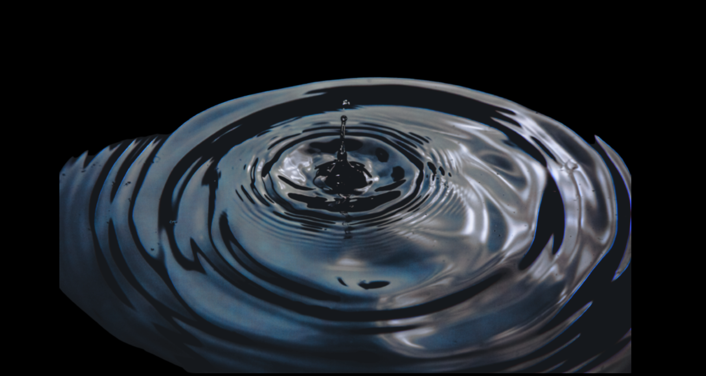
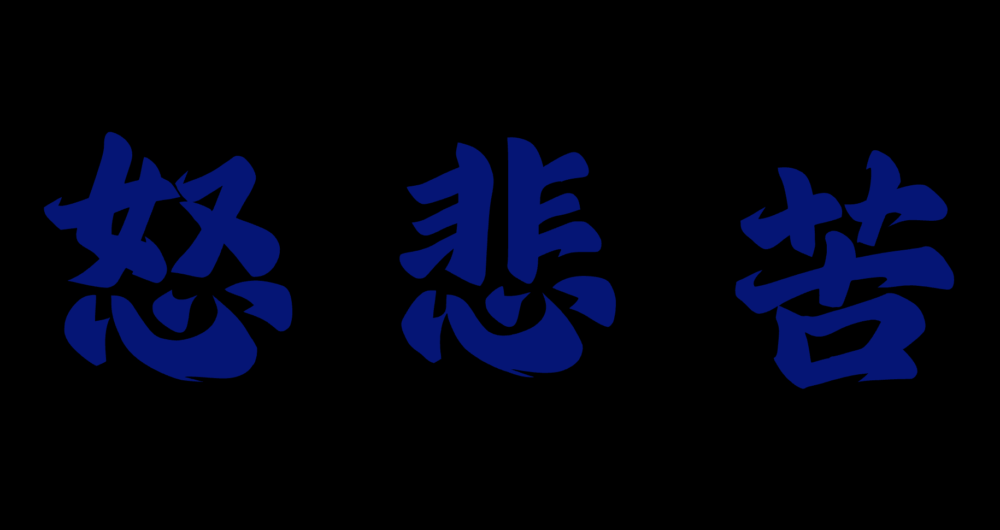
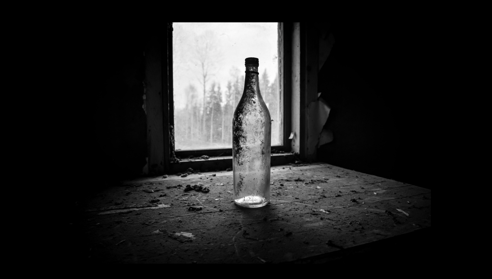
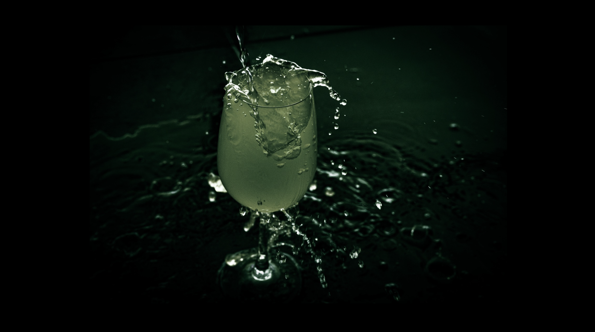

PAST RECORD
どちらも１時間以内で、全ての枠が満席に
そして、現在300件以上の方からお問い合わせが来ている浄化プログラム。
以前受けられた方達から、沢山のご報告を頂いております。


臨時収入13万円が入り込んできた方であったり

たった１ヶ月後に集客数が4倍、5倍になった事業主様

チケット当選、ご家族様の変化、臨時収入

本当に沢山のお声が届いております。
WELCOME
そして今夜…。
復活
浄化プログラムへようこそ。

ここまで読み進めてくださったということは、あなたは既に理解しているはずです。
そして、こう思ったはずです。
その答えをお渡しします。
私が富裕層専属の開運師として活動する中で作り上げた、
「7日間浄化プログラム」の全貌を。

WHAT IS THIS
あなたの器を空っぽにして、
清らかな運気を迎え入れる
7日間 浄化プログラムとは、何か。
一言で言うなら——「魂の禊」です。
想像してみてください。
1年間、一度も
掃除していない家を。
その家で毎日を過ごしたら、どうなるか。
気分は晴れない。体は重い。
何をしても、どこかどんよりしている。
では——
1年間、一度も
浄化されていない魂は？
この状態で、どれだけ行動しても。
どれだけいい人と出会っても。
器が満杯では、何も入ってこない。
家を掃除するように、魂にも禊が必要です。
1年分の澱みを手放す。悪縁を断ち切る。
ネガティブな感情を、魂から吐き出す。
「私なんて」という思い込みを、根こそぎ溶かす。
そうして——空になった器に、本物の運気が流れ込む。
これが、このプログラムの目的です。


RESONANCE
最近こんなことを
感じていませんか？
もし一つでも当てはまるなら——
それは、あなたの魂が「もう限界だ」と
声を上げているサインかもしれません。
WHY IT MATTERS
なぜ、このプログラムが
多くの方に必要とされているのか？
器が既に満杯になっている人が多い。
「気持ちがずっと晴れない」「モヤモヤする」「僻みや嫉妬の思いが強い」
こういった状態だと、いくら運のいい人と関わっても、器が満杯だといい運気はなかなか受け取ることが難しい。
泥水でいっぱいのコップに、美味しい水を注いでも意味がない。
だから、まず泥水を捨てる必要があるんです。

魂の器は勝手に溜まっていってしまう。
仕事のストレス、人間関係のストレス、過去の嫌な思い出、悪縁からのネガティブなエネルギー——
これら全てが、あなたの器を無意識下で満杯にしています。
「気持ちが落ちやすい」「罪悪感を感じやすい」「いきなり疲れがどっとくる時がある」
これらに当てはまる人は、特に魂に詰まりが溜まってしまっている場合が多い。
一人で浄化するのは、なかなか難しい。
なぜなら途中で、自我が邪魔をするからです。
魂の声に近づこうとすると、思考が全力でブレーキをかけます。
「やっぱり開けないでおこう」「考えすぎだよ」「私は大丈夫、もう過去のことだから」
溜め込んできた時間が長いほど、層は厚くなっている。
「向き合った方がいいのは分かっている。でも、一人では怖い」
この声を、本当にたくさんいただいてきました。
だからこそ今回、浄化プログラムをご用意させて頂きました。

7 DAYS JOURNEY
このプログラムの三つの特徴
FEATURE 01
正しい順番で進むことができる。
7日間で段階的に魂の毒を吐き出していきます。
7日間かけて、自我・思考が作り出した層を一枚ずつ剥がしていきます。
DAY 1 – 2
自我の表層 — 日々の〇〇と向き合う
まず表面にある日常のストレスや感情と向き合う段階。
DAY 3 – 4
中層 — 封じ込めてきた〇〇が浮かび上がる
深く封印してきた感情が、ゆっくりと表面に現れ始める。
DAY 5
深層 — 自分への〇〇と正面から向き合う
最も深い場所にある、自分自身への感情と対峙する。
DAY 6
魂の声が聴こえてくる（転換点）
今まで聴こえなかった魂の本音が、静かに届き始める。
DAY 7
手放しと、未来への一歩
全てを手放し、空っぽになった器で新しい運気を迎える。
この順番は、3年間の研究の結果、最も効果的だと分かった順番です。
FEATURE 02
正しい質問が届く。
毎日、最適な問いかけが届きます。あなたは、その問いかけに正直に答えるだけ。
「今日は何を書こう…」と悩む必要は一切ありません。
魂の深い場所に眠っている声は、正しい問いかけでしか引き出せません。
普段の思考の延長では、たどり着けない場所があるのです。
FEATURE 03 — 真髄
私が直接行う、浄化のエネルギーワーク。
魂の声を聴くこと。重荷に気づくこと。それを言葉にして書き出すこと。
ここまでは、正直、一人でもできるかもしれません。
でも、書き出したもの、どうしますか？
魂の奥底から引き上げた悲しみ、憎しみ、トラウマ、魂の叫び。
それが目の前にある。言葉になって、そこにある。
引き上げただけでは、浄化は完成しません。
むしろ、引き上げたまま放置してしまったら、余計に苦しくなることすらある。
だからこそ、最後の工程を私が引き受けます。
あなたが7日間で魂から引き上げたもの全てを、私が直接受け取り、私の手で浄化する。
あなたの悲しみも、憎しみも、叫びも、全部。私に預けてください。
これは一人一人の魂と向き合い、一人一人に対して直接行う儀式です。
PLANS
今回特別なプランを
２つご用意しました
禊 — 基層
通常価格 ¥14,800
¥7,980税込
- 7日間で1回の浄化儀式を執り行う
- 複数名の魂をまとめて浄化処理
- 表層〜中層に溜まった澱みを流す
- 毎日、魂への問いかけが届く
- 吐き出した感情を私が受け取る
- 完全プライベート（他の方の入力は見えません）
※「基層」とは、浄化の処理を複数名まとめて行うという意味です。グループラインが作られたり、他の方の入力が見えることは一切ありません。
こんな人におすすめ：
まずは浄化を体験してみたい / できるだけ費用を抑えたい / シンプルに浄化だけを行いたい
禊 — 深層
通常価格 ¥49,800
¥19,800税込
- 毎日、あなた一人のために浄化儀式を執り行う
- 魂の深層まで届く、個別エネルギーワーク
- 7日間、毎日あなただけのために向き合う
- 毎日、魂への問いかけが届く
- 吐き出した感情を私が受け取る
- 「運気を受け入れるための過ごし方ガイド」(30P PDF) プレゼント
こんな人におすすめ：
本気で人生を変えたい / より深く浄化したい / 浄化後の過ごし方も知りたい / 今までの自分と完全に決別したい / 2026年を最高の状態で迎えたい
「運気を受け入れるための過ごし方ガイド」

実は、浄化が完了した後の過ごし方が、最も重要です。
せっかく器を空けても、正しい過ごし方をしないと、すぐに毒が溜まります。
第1章：浄化後に絶対にやってはいけない5つのこと
なぜ浄化直後が最も重要なのか / 運気を下げる行動・浄化を台無しにする言葉 / 避けるべき人、場所、情報
第2章：浄化後に取り入れるべき7つの習慣
朝一番・寝る前にやるべきこと / 運気を引き寄せる食事 / 直感を信じる練習
※禊 — 基層には、この特典はありません。
WHY NOW
なぜこのタイミングなのか。
2026年3月は新しいご縁を迎えるために
最も適切な期間なのです。
この１ヶ月は、スピリチュアルの世界で最も重要な期間の1つです。
この期間に始めた浄化は、魂の深層まで届きやすいとされています。
そして2026年3月は「新しい縁が結ばれ、清らかな運気が流れ込む月」と言われており、
新鮮でクリーンな運気がたくさん入りやすい月なのです。

FAQ
よくある質問と
購入前の注意点
本当に7日間で変わりますか?
こちらは効果を保証するものではありませんが、参加された方からは体が軽くなった、気持ちがスッキリしたというお声をよくいただいております。
忙しくて毎日時間が取れないかもしれません
1日の所要時間は10分〜15分程度です。寝る前の10分、通勤中の10分で完了します。基本的には一人でお時間を作れる夜にお送りいただけるといいですね。
グループと個別、どちらを選ぶべきですか?
本気で人生を変えたいなら、禊 — 深層を選んでください。浄化後の過ごし方ガイドがあるので、効果が持続します。
どこで回答するのですか？
LINEにてご案内いたします。ご購入後、公式LINEにキーワードをご入力いただくと、専用フォームのURLが届きます。毎日、魂への問いかけが届き、そちらにご回答いただく形式です。
返金保証はありますか?
ありません。このプログラムは、本気で変わりたい方のためのものです。「試しに」という気持ちでは、魂は開きません。覚悟を持って、扉をくぐってください。
回答は誰かに見られますか?
完全にプライベートです。回答は私だけが確認します。浄化完了後にお知らせいたします。
サポートはありますか?
基本的にサポートはありません。質問に答えて感情を吐き出し、私がエネルギーワークを行う形式です。
開始日はいつですか?
ご購入後、こちらからご案内をさせて頂きます。
支払い方法は?
クレジットカード、またはコンビニ決済が可能です。（後払いご希望の方は別途ご連絡を下さいませ。）
頭で考えた答えは、いつか揺らぐ。— 私の祖母の言葉
でも魂が出した答えは、一生揺らがない。
あなたの魂は、ずっと声を上げています。
その声を、聴いてあげたことはありますか。
もし「聴いたことがないかもしれない」と感じたなら
それに気づけた今が、最高のタイミングです。
7日後のあなたは、きっとこう感じているはずです
- 朝、目が覚めた時に「今日も頑張ろう」と自然に思える。
- 小さなことに「ありがとう」と心から言える。
- チャンスが来た時に、迷わず手を伸ばせる。
それは、特別な自分になることではなく——
本当の自分に、還るだけ。
元々、あなたはそういう人だったのだから。

LAST CALL
あなたの魂は、
ずっと待っていました。
この瞬間を。
扉は——今夜だけ、開いています。
心の器を空にして、
本当の自分で——2026年を生きませんか。

※ 定員に達し次第、募集終了